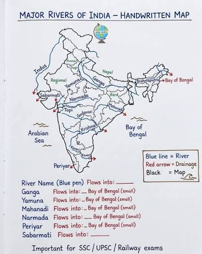

PURE WATER.
SMART NATION.
A next-generation civic platform connecting every citizen with the government to test water quality, report sanitation issues, and track resolutions in real time.
0+
Water Tests
0+
Villages Covered
0
Resolution Rate
0+
Water Samples Tested
0+
Villages & Wards
0+
Complaints Resolved
0+
States & UTs
Citizen Services
Everything you need, in one place.
Test your water, raise a grievance, and follow its journey to resolution — all from a single trusted platform.
Water Quality Check
Enter your pincode to instantly view TDS, pH, hardness and a safety verdict for your area.
Check nowReport an Issue
File complaints about contaminated water, leaks, or supply failures with photo evidence.
File complaintTrack Complaint
Follow your grievance through every stage with a live, transparent resolution timeline.
Track statusOur Mission
Clean water is a right, not a privilege.
Neer Safai digitises the bridge between citizens and water authorities. Every complaint becomes a tracked, accountable task — and every data point helps government plan better infrastructure.
Transparent grievance tracking
Live status updates for every complaint ID.
Real-time quality intelligence
TDS, pH and hardness insights mapped to pincodes.
Accountable field response
Officers resolve and update status from a secure dashboard.
Flagship Programmes
National missions, one shared goal.
From the Field
Rivers, villages and the people we serve.
Nationwide water intelligence.
Every dot represents active water quality monitoring and grievance activity. Explore state-wise performance and hold authorities accountable.

Illustrative coverage data · Demo visualisation
Government Notices
Latest circulars & orders.
Spotted a water problem in your area?
It takes less than two minutes. File it once, and track it until it is resolved.